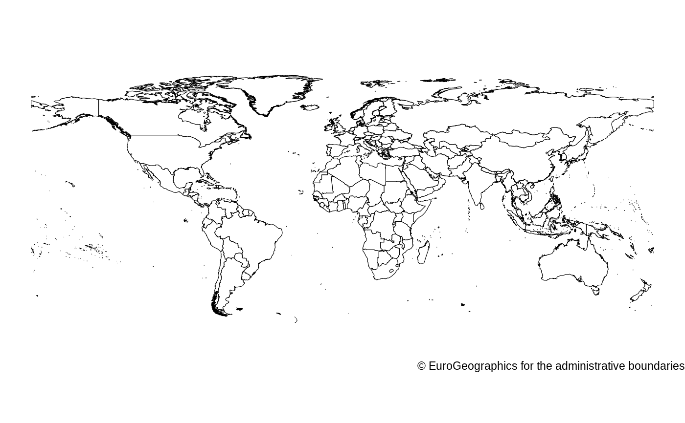

world_map.RdWe conveniently package map datasets for the world (taken from Eurostat/GISCO) that can be used in ggplot2 without needing any geo libraries. This data is licensed under specific conditions noted in the details section.
world_map
Longitude.
Latitude.
The order that this line should be plotted in.
Needs to be used as 'group' aesthetic in ggplot2.
3 character isocode, describing 254 administrative regions defined by Eurostat/GISCO.
3 character isocode, mapping the 254 administrative regions defined by Eurostat/GISCO into:
193 UN member states
1 non-member permanent observer state (State of Palestine)
"DISPUTED" (Western Sahara, Paracel Islands, Askai Chin, Arunachal Pradesh, China/India, Hala'Ib Triangle, Ilemi Triangle, Jammu Kashmir, Kuril Islands, Navassa Island, Scarborough Reef, Senkaku Islands, Bassa Da India, Abyei, Bir Tawil)
This world map contains 254 administrative regions (`iso3_eurostat`), as defined by Eurostat/GISCO. The Vatican is not included in these administrative regions. Antarctica was physically removed by the maintainers of this R package.
A second variable (`iso3_un195`) maps these administrative regions to:
193 UN member states
1 non-member permanent observer state (State of Palestine)
"DISPUTED" (Western Sahara, Paracel Islands, Askai Chin, Arunachal Pradesh, China/India, Hala'Ib Triangle, Ilemi Triangle, Jammu Kashmir, Kuril Islands, Navassa Island, Scarborough Reef, Senkaku Islands, Bassa Da India, Abyei, Bir Tawil)
The permission to use the data is granted on condition that:
The data will not be used for commercial purposes
The source will be acknowledged. A copyright notice will have to be visible on any printed or electronic publication using this dataset
library(ggplot2) q <- ggplot(mapping = aes(x = long, y = lat, group = group)) q <- q + geom_polygon(data = fhidata::world_map, color = "black", fill = "white", size = 0.2) q <- q + theme_void() q <- q + coord_map( projection = "cylequalarea", xlim = c(-180, 180), ylim = c(-70, 90), orientation = c(90, 0, 0), parameters = list(lat0 = 90) ) q <- q + labs(caption = "\u00A9 EuroGeographics for the administrative boundaries") q